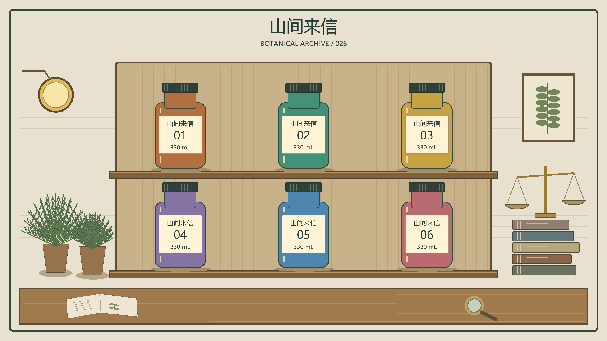

8 张已出图，但原生 2K 全部未达标。
请求 2560×1440；文生图实际 1536×1024，图生图实际 1672×941。此处评分针对实际返回图片，原图未放大、未修图。
| 请求模型 | 文生图 | 图生图 | 平均 /100 | 文 / 图耗时（秒） | 原生 2K |
|---|
| 2.5-flare | 92 | 96 | 94 | 105.7 / 43.1 | 未达标 |
| 2.5-sunburst | 95 | 95 | 95 | 112.9 / 42.8 | 未达标 |
| 2.6-flare | 92 | 96 | 94 | 108.8 / 91.9 | 未达标 |
| 2.6-sunburst | 96 | 96 | 96 | 125.7 / 44.8 | 未达标 |
本轮暂选 2.6 Sunburst：复杂场景的约束完成度略高；2.5 Sunburst 很接近。两版 Flare 都因额外背景路人扣分；图生图基本打平。没有看到明确的代际跃升，四个型号的原生 2K 交付均未通过。
单样本视觉评测，1–4 分不构成统计显著差异。模型名称是实际提交的请求 ID；未验证网关最终使用的底层模型。无固定随机种子，耗时不计入画质分。3 项首轮 503 后补测成功，已出图条件没有重做。
文生图 · T1_C
2.5-flare
92/100实际 1536×1024 · 105.7 秒 · 首轮首张
主角、单只打开怀表、三只茶杯、猫、10:10 时钟及指定文字基本准确。 雨滴、织物、茶汽和木柜抽屉层次出色，柜内工具有较好空间分离。
扣分：背景站台明显多出路人，违反只有四个人的明确约束，指令项扣 4 分。 交接手指细节略生硬，微小机械结构仍有装饰性；整体人物关系稍显摆拍。
分项：36 / 18 / 19 / 14 / 5
打开原图 ↗
文生图 · T1_A
2.5-sunburst
95/100实际 1536×1024 · 112.9 秒 · 首轮首张
四位人物、站位、单只打开怀表的交接、三只茶杯、灯壶左右关系、柜下猫及 10:10 时钟均可辨认。 拾光修理铺、REPAIR 24 两处指定文字正确；雨滴、金属反射、皮肤、木柜划痕和袖口纹理表现丰富。
扣分：近看细小机芯和齿轮的咬合仍偏装饰化，部分玻璃柜反射层次较繁杂。 茶汽不明显，背景人物略有摆拍感；画质分不包含尺寸达标情况。
分项：40 / 18 / 18 / 14 / 5
打开原图 ↗
文生图 · T1_D
2.6-flare
92/100实际 1536×1024 · 108.8 秒 · 补测首张
交接怀表、三只白茶杯、猫、时钟和中英指定文字均完成；工具与抽屉分层清楚。 茶汽、雨衣水滴、灯罩与金属材质表现较好，主角的表情自然。
扣分：站台远处多出路人，违反只有四人的条件，指令项扣 4 分。 怀表交接处的手指边界略含混，微小齿轮机构更像视觉装饰；部分高光较强。
分项：36 / 18 / 19 / 14 / 5
打开原图 ↗
文生图 · T1_B
2.6-sunburst
96/100实际 1536×1024 · 125.7 秒 · 首轮首张
四位主角的位置、怀表交接、三个茶杯、柜下猫、时钟时间和两处指定文字均完成。 茶汽清晰，柜内分格工具、玻璃反射、皮革和雨衣表面细节丰富，主次清楚。
扣分：近看接触区域的手指遮挡关系略含混，微小机芯部件不完全符合真实机械装配。 人物表情和正面摆位稍显刻意，局部金属高光略密。
分项：40 / 18 / 19 / 14 / 5
打开原图 ↗
图生图 · I1_C
2.5-flare
96/100实际 1672×941 · 43.1 秒 · 首轮首张
三处指定修改准确，六瓶标签、编号、容量和其余颜色均保留。 玻璃厚度、木材接缝、灯罩纹理和展示盒底座较清楚；参考布局整体稳定。
扣分：瓶颈与局部轮廓仍有小幅变化，且底部外框被前景桌面占用，参考保持扣 2 分。 书本装饰和极细纹理不能当作可读的真实内容；光照与构图优秀但较对称和静态。
分项：35 / 33 / 19 / 9
打开原图 ↗
图生图 · I1_A
2.5-sunburst
95/100实际 1672×941 · 42.8 秒 · 首轮首张
正确把大标题改为雾林档案、只将 02 瓶改为钴蓝色，并加入一只蝴蝶的透明展示盒。 六瓶位置、01–06 编号、330 mL、瓶身山间来信及副标题保留，侧边植物、书本天平和桌面物品齐全。
扣分：瓶颈与肩部比例相对参考有一定重塑，保持项扣 2 分。 近看玻璃展示盒边缘与微小书写纹理略含混，暖色光线统一但层次稍平。
分项：35 / 33 / 18 / 9
打开原图 ↗
图生图 · I1_D
2.6-flare
96/100实际 1672×941 · 91.9 秒 · 补测首张
三处指定修改和六组瓶身文字全部完成，保留两排布局、周边物品与底部外框。 木架空间关系、天平刻度、玻璃展示盒和暖光投影清楚，画面完整。
扣分：瓶颈、瓶肩和桌面高度相对输入仍略有变化，保持项扣 1 分。 相比其他样本，部分玻璃与细小材质纹理稍平，书页小字仍属纹理；整体色调略单一。
分项：35 / 34 / 18 / 9
打开原图 ↗
图生图 · I1_B
2.6-sunburst
96/100实际 1672×941 · 44.8 秒 · 补测首张
换标题、02 瓶钴蓝色和新增单只蝴蝶展示盒准确，六瓶编号及容量文字全部可读。 玻璃折射、金属底座、蕨叶和木纹层次丰富，暖光下不同材质区分清楚。
扣分：瓶颈比例有小幅变化，底部外框被前景桌面占用，未完整保持原图边框。 个别玻璃高光偏密、书页极小字不清晰，整体色调略偏统一的金黄色。
分项：35 / 33 / 19 / 9
打开原图 ↗
输入与评分标准
文生图：指令关系 40、解剖物理 20、材质细节 20、构图光照 15、洁净度 5。图生图：指定修改 35、参考保持 35、材质几何 20、构图光照 10。每项满分 100，两项各占一半。尺寸单独判定。
统一图生图参考 · 程序绘制，2560×1440

文生图原始提示词
Create one photorealistic cinematic still of an intricate watch-repair shop inside a glass-roofed Shanghai railway station at rainy blue hour. Eye-level 35 mm lens, medium-wide framing, believable perspective. The watch-repair counter fills the lower half; layered station architecture remains legible behind it. Use a clear focal hierarchy while keeping the small objects individually readable.
Exactly FOUR adult people, all 30 or older: at image left, a woman with a short black bob and mustard-yellow raincoat stands facing right; at image right, a gray-haired male watchmaker with round glasses, dark-blue apron and white shirt stands facing left behind the counter. Between them, the woman offers ONE open silver pocket watch and the watchmaker receives it. Their visible hands meet naturally around that same watch, with believable fingers and contact. In the middle background, ONE woman in a burgundy coat holds a closed red umbrella vertically. On the upper mezzanine at far right, ONE adult railway worker in a teal jacket leans on the railing. These four people are the complete human cast.
Precise object placement: a green banker's lamp stands at the LEFT end of the counter. A clear glass teapot containing amber tea stands at the RIGHT end. Exactly THREE white ceramic teacups form a straight row between the lamp and teapot. ONE sleeping orange cat is UNDER the counter, clearly visible. A large round wall clock ABOVE the watchmaker reads exactly 10:10. A rectangular shop sign centered overhead reads exactly "拾光修理铺". A small brass plaque on the counter front reads exactly "REPAIR 24". Render both inscriptions clearly and verbatim.
Rich environmental detail: rain beads and streaks on the glass roof, a stationary teal train visible through the left windows, riveted steel trusses, electrical cables with believable mounting brackets, aged brass gears sorted in shallow drawers, three tiny screwdrivers beside a magnifier, an opened watch movement with individually resolved cogs, subtle wood scratches, stitched apron seams, realistic skin and hair, thin tea steam, transparent glass refraction, a soft reflection of the green lamp in the glass counter and restrained wet floor reflections. Warm lamp light illuminates the hands against cool blue exterior light. Keep faces, the shared watch and lettering sharp, perspective coherent and highlights controlled. Deliver a single continuous image.
图生图原始提示词
Image 1 is the sole composition and object-identity reference: a program-drawn botanical archive display. Transform this same display into a richly detailed, physically believable photographic scene in an old apothecary workshop. Treat the input as a strict layout reference, preserving its frontal camera, main frame, two shelves, six-bottle arrangement, object identities and readable labels. Render the drawing as real objects rather than a flat illustration.
Make exactly these THREE semantic changes: (1) change only the large centered title at the top from "山间来信" to "雾林档案"; (2) change bottle 02, at the upper middle, from green to saturated cobalt blue glass, preserving its silhouette, label and cap; (3) add ONE small transparent rectangular glass display case on a dark brass base at the FRONT CENTER of the bottom table, containing exactly ONE amber-colored butterfly with two intact symmetric wings. Its scale must allow all six bottle labels to remain visible.
Preserve: six bottles only, in the same two rows of three; the sequence 01, 02, 03 on the upper shelf and 04, 05, 06 on the lower shelf. Preserve the colors of the other five bottles: 01 amber brown, 03 ochre gold, 04 violet, 05 muted blue, 06 rose. Every cream bottle label must still read "山间来信", its original two-digit number and "330 mL". Preserve the subtitle "BOTANICAL ARCHIVE / 026", the pair of botanical plants at left, the stack of books and brass balance at right, the round lamp at upper left, the botanical drawing at upper right, and the open notebook and magnifier on the bottom table. Preserve the shelf and cabinet proportions and the relative positions of these objects.
Add physically realistic surface detail without adding bottles or people: thick translucent colored glass with refraction and reflections, tiny trapped glass bubbles, dark ribbed caps, matte paper labels with crisp ink and faint fiber texture, honey-colored wood grain and old joinery, minute brass patina, finely veined fern leaves, bookbinding threads, engraved balance graduations, realistic notebook paper and small botanical sketches. Use warm afternoon light from the left with soft cool ambient fill. The six labels and title are readable, the butterfly is visible through clear glass, the scene has believable contact shadows and perspective, and the overall image remains orderly and coherent. Deliver one continuous frontal photograph.
完整评分报告 · 预先评分协议 · 结果 JSON · 2K 尺寸核查